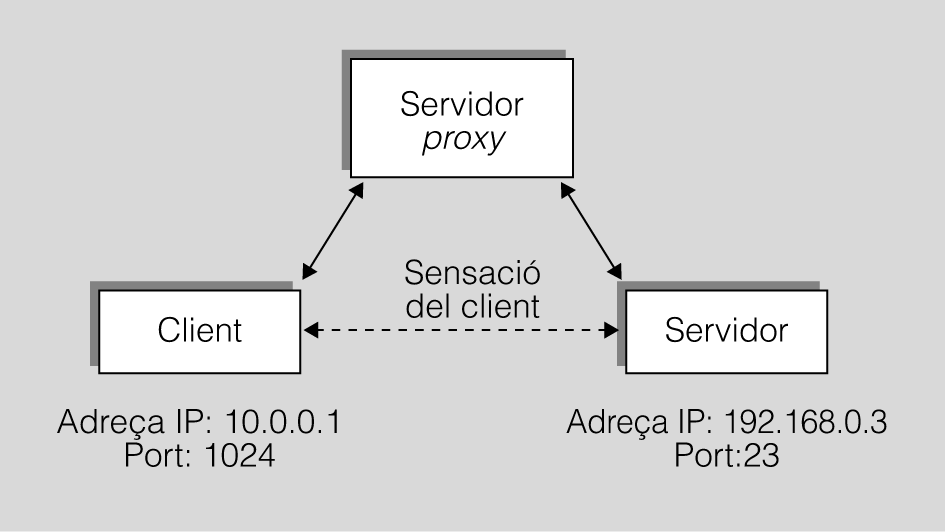

1.2. Servidor intermediari
Un servidor intermediari (proxy) és un programa o dispositiu que duu a terme tasques d’accés a Internet en el lloc d’un altre ordinador. És a dir, és un punt intermedi entre un ordinador connectat a internet i el servidor web al qual està accedint. La traducció de la paraula anglesa proxy és per poders, és a dir, es permet que sigui un servidor intermediari el que ens connecta a Internet en lloc del mateix usuari.

Funcions d'un servei proxy
Els servidors proxy tenen les següents funcions:
- Actuen de passarel·la a nivell d'aplicació ja que permeten l'accés web als nodes amb adreça IP privada que no estan connectades directament a internet.
- Controlen l'accés web aplicant un seguit de normes i regles, per exemple, segons la pàgina web sol·licitada, el dia o l'hora de la sol·licitud, etc.
- Registren el trànsit web des de la xarxa local cap a l'exterior.
- Controlen el contingut web visitat i descargat per a detectar la presència de possibles atacs mitjançant virus, cucs, troians, etc.
- Controlen la seguretat de la red local davant de possibles atacs o intrusions del sistema.
- Funcionen com una cau de pàgines web: emmagatzemen les pàgines web vistes pels usuaris, de forma que sí algú vol accedir a una pàgina prèviament sol·licitada i el proxy la té emmagatzemada no necessitarà eixir a internet sinó que podrà entrar la que té emmagatzemada.
Avantatges
En general, no només en informàtica, els proxys fan possible:
- Control: només l'intermediari fa el treball real, per tant es poden limitar i restringir els drets dels usuaris, i donar permisos únicament al servidor intermediari. Es pot restringir l'accés en un horari determinat.
- Estalvi: només un dels usuaris (el proxy) ha d'estar preparat per fer la feina real. Amb estar preparat vol dir que és l'únic que necessita els recursos necessaris per fer aquesta funcionalitat. Exemples de recursos necessaris per fer la funció poden ser la capacitat i lògica de l'adreça de xarxa externa (IP).
- Velocitat i eficiència: si diversos clients van a demanar el mateix recurs, el proxy pot fer memòria cau: guardar la resposta d'una petició per donar-la directament quan un altre usuari la demani. Així no ha de tornar a contactar amb el destí, i acaba més ràpid.
- Filtratge de serveis: el proxy pot negar-se a respondre algunes peticions si detecta que estan prohibides.
Desavantatges
En general, l'ús d'un intermediari pot provocar:
- Anonimat: si tots els usuaris s'identifiquen com un de sol, és difícil que el recurs accedit pugui diferenciar-los. Però això pot ser dolent, per exemple quan cal fer necessàriament la identificació.
- Abús: en estar disposat a rebre peticions de molts usuaris i respondre-les, és possible que faci algun treball que no toqui. Per tant, ha de controlar qui té accés i qui no als seus serveis, cosa que normalment és molt difícil.
- Càrrega: un proxy ha de fer la feina de molts usuaris.
- Intromissió: és un pas més entre origen i destí, i alguns usuaris poden no voler passar pel proxy. I menys si fa de memòria cau i guarda còpies de les dades.
- Incoherència: si fa de memòria cau, és possible que s'equivoqui i doni una resposta antiga quan hi ha una més recent en el recurs de destinació. En realitat aquest problema no existeix amb els servidors intermediaris actuals, ja que es connecten amb el servidor remot per comprovar que la versió que té en memòria cau segueix sent la mateixa que l'existent al servidor remot.
- Dificultat per a configurar alguns protocols: no tots els protocols són aptes per a ser configurats mitjançant un proxy, el que pot limitar la seua eficàcia.
Servidor proxy obert
Un proxy obert és un servidor proxy de reenviament accessible per qualsevol usuari d'Internet. Un proxy obert anònim permet als usuaris amagar la seva adreça IP mentre navega per la Web o utilitza altres serveis d'Internet.